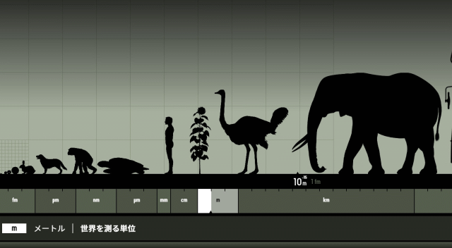

学習サイトの紹介
チーてれスタディネット
市総合教育センタ－ 学習応援サイト
おうちで学ぼう NHK for School
ちばっ子チャレンジ100
漢字検定
家庭学習のすすめ 小学生向け 千葉県教育委員会
ペーパークラフト・塗り絵 JR西日本
子供の学び応援サイト 文部科学省
～ショコラとホイップの ICT もの語（がた）り～
ショコラとホイップが興味本位（きょうみほんい）でいろいろ解説（かいせつ）するよ。
ホイップ
あひるのホイップだよーん。
わしらの世話（せわ）をしてくれる岡本さんや
飼育（しいく）委員会のよい子のみなさん、いつもサンクス。
ショコラ
ウサギのショコラっす。
こんど校長先生がなかまをふやしてくれそうなんだ。うれしいピョーン！！
第１話【全国各地（ぜんこくかくち）の向山小】
夏休みだし、「向山小学校」で検索（けんさく）をしてみたぞ。
クリックすると、その学校のサイトにとぶから見てみなよ。

ちばけん
千葉県
ならしのしりつ むこうやま
習志野市立向山小学校

とうきょうと
東京都
ねりまくりつ こうやま
練馬区立向山小学校

くまもとけん
熊本県
くまもとしりつ こうざん
熊本市立向山小学校

みやぎけん
宮城県
せんだいしりつ むかいやま
仙台市立向山小学校

しずおかけん
静岡県
みしましりつ むかいやま
三島市立向山小学校

あいちけん
愛知県
いちのみやしりつ むかいやま
一宮市立向山小学校

やまぐちけん
山口県
しものせきしりつ むかいやま
下関市立向山小学校

あいちけん
愛知県
とよはししりつ むかいやま
豊橋市立向山小学校
はいこう わかやまけん
廃校 和歌山県
おおとうそんりつ ？？
大塔村立向山小学校
廃校とは、むかしあったけれど、
今はない学校のことだべし。
へー いろんなところにあるね。
北は仙台、南は熊本にもあるんだ。
でも「むこうやま」って呼ぶのはうちだけっす。
「検索（けんさく）」すると知らなかったことがわかって楽しいんだぜ。ではまたね！
職員のおすすめ学習サイト
| 職員 |
コメント |
サイト |
教科・学年 |
| Ａ |
いかによい車を作るかだけではなく、環境や持っているお金のおとも考えます。車を作る工場の運営のおもしろさがわかります。 |
カーアンドエコゲーム
|
|
| Ｂ |
タイピング練習サイトです。まこなり社長おすすめで、あの本田圭佑選手もこれでタイピングを練習したそうです。ちなみに私はサーモンが好きです。 |
寿司打 |
総合 高 |
| Ｂ |
子ども向けプログラミング学習サイトです。サイバーエージェントが作っており、キャラクターなどにこだわっています。有料です。
|
キュレオ |
総合 高 |
| Ｄ |
ミッキーのダンスをおどりましょう！家の中でも１曲おどれば息が切れるくらい疲れます。 |
ジャンボリーミッキー
|
総合 高 |
| Ｅ |
ダンスをして運動不足を解消しよう。土曜日、木曜日にEテレで放送しています。ログインすると見逃した番組も見られるよ。エグザイルになっちゃおう！！！ |
Eダンスアカデミー
|
体育 全 |
| Ｆ |
昨年度末の「春の総復習ドリル」が無料でダウンロードできます。カラーで楽しく復習ができます。解説がとても詳しいので、子どもだけでも学習がすすめやすいです。印刷ができない場合はダウンロードしたデータをコンビニで印刷するといいですよ。
|
進研ゼミ
|
国算 全 |
| Ｇ |
とても簡単なダンスです。少し長いので、５分だけ等、区切ってやるといいです。マンションでもできる楽しい運動です。お母さん、ぜひ一緒に踊ってくびれをゲットしましょう！！！お父さん、自宅勤務の後に、見違えるナイスバディをゲットしみんなを驚かせましょう。みんなで踊ると楽しいよ。
|
【地獄の11分】マンションOK！飛ばない脂肪燃焼ダンスで全身の脂肪をみるみる燃やす！
|
体育 全 |
| Ｈ |
なわとびは短い時間で、たくさんの運動量を確保できます。二重跳びだけでなく、面白いポーズも見られますよ。 |
二重とびを成功させたいなら、なわとびのココを直そう！
|
体育 全 |
| Ｉ |
家でできるストレッチ・簡単な運動がわかりやすく掲載されています。どの学年でもできますよ。 |
運動神経をよくするには
またのつけ根をのばそう |
体育 全 |
| Ｉ |
家でできる遊びや簡単で楽しい工作のアイディアがたくさんあります。おうちの人とぜひ一緒にやってみてください。 |
ミックスじゅーちゅ |
図工 生活 全 |
| Ｊ |
上の２つが入っているサイトです。新しい縄跳びの跳び方、マット運動、かけっこが早くなるコツなどなどたくさん入っています。先生も勉強になります。 |
ソトイコチャンネル
|
体育 全 |
| Ｊ |
プログラミング学習を通して、自分だけのゲームを作ることができます。 |
Scratch |
全 |
| Ｋ |
後数か月しか使えないサイトではありますが、どの学年の人でも楽しくプログラミングについて学習することができます。 |
プログラミン |
全 |
| Ｌ |
１、２年生に特におすすめのプログラミング学習サイトです。 |
Hour of code
|
低 |
| Ｇ |
2年生のかけ算は「パプリカ」で踊りながら覚えよう。これなら楽しく覚えられる。運動しながら覚えちゃおう。向山小２年生の宿題です。
|
パプリカ 替え歌
九九のうた |
算数 ２年 |
| Ｇ |
パプリカのダンス解説動画です。楽しく踊ろう！！！ |
＜NHK＞2020応援ソング「パプリカ」ダンス解説動画
|
体育 全 |
| Ｏ |
千葉ロッテマリーンズの選手が登場したり、野球に関する問題もあったり、マリーンズや野球が好きな人にはピッタリ！
楽しく学習してかしこくなろう！ |
マリーンズ算数ドリル
|
算数 全 |
| Ｐ |
楽しく歴史が学べる学習まんが「日本の歴史」を無料で見ることができます！期間限定ですので、この機会に全部読んで、日本の歴史をばっちり覚えよう！ |
小学館 日本の歴史
|
社会 |
| Ｑ |
教科書会社のサイトです。様々な補助教材やデジタルコンテンツが公開されています。主に算数と理科についての授業動画やおもしろ話題が豊富に紹介されていますよ。
|
大日本図書
学習支援コンテンツ |
算数 理科 |
| Ｒ |
先生 算数の学習の前に、「わくわく算数スマートレクチャー」を見るとわかりやすいです。 |
わくわく算数スマートレクチャー |
算数 全 |
| Ｒ |
こどもむけのたくさんの本が無料で読むことができます。ずかん・絵本・にゅうもんシリーズ・・・。こんなにむりょうでいいのでしょうか。ぜひ一度アクセスを。 |
学研春の応援ライブラリー |
全 |
THUNDERBIRDS
給食の時間に流れる音楽「サンダーバード」のオープニング動画をYoutubeで見つけたので貼っておきます。
今から５０年以上前のイギリスで放送されたSF特撮人形劇ですが、今聴いても、かっこよくてわくわくするサウンドです！
ストーリーは、国際救助隊が科学の粋を集めた乗り物で悪者の手でピンチに陥った人々を救助に向かいます。
世間を騒がしている「ウイルス」と「大きさ」のはなし 理科好きな人はみてね。
髪の毛の太さ 約 70µm
細菌 約 0.5～5µm
ウイルス 約 0.01～0.1µm
「ウイルス」の大きさは、地球からみて１mちょっとの
小学生ぐらいです。
乳酸菌とか大腸菌とか虫歯菌？の「菌」と「ウイルス」は似たようなものだろうと思っていたら、 大きさがかなり違う。中には「菌」にとりつくウイルスもいるそうです。
「菌」と「ウイルス」の増える方法も違います。
「菌」は周りにエサとなる栄養があれば、それを食べて自分で増えることができます。
しかし、「ウイルス」は自分で増えることができません。
では「ウイルス」はどうやって増えるかというと、他の生物の細胞に寄生し、 その細胞が増えるしくみを借りて増えていくそうです。
「ウイルス」に対する治療法は、無毒化したウイルスを体内に入れて免疫力を高め、
感染したときにウイルスが増えることを抑えるワクチンの投与です。
予防法は、「体内に寄生させない」「免疫力を低下させない」ことでしょう。
いろんなものの大きさに興味がわいて検索してみて、面白かったサイトを紹介します。
あらゆるものの大きさを一目で見て比較する

Universcale（ユニバースケール）by Nikon
e（いー）ライブラリ アドバンス 「家庭（かてい）学習サービス」
自分（じぶん）にあわせて進（すす）められるので、やっているお友達（ともだち）も多（おお）いようです。
１.家庭学習サービスの概要
この度、本校パソコン教室に「ラインズeライブラリアドバンス」という、 ドリル問題(小学校:国算理社、中学校:国数英理社保体技家音美)を中心とした様々な
教育用コンテンツを利用できるサービスが導入されました。 これに伴い、各ご家庭でも、以下の「家庭学習サービス」を無料でご利用になることができます。
(注:各種通信機器の通信にかかる費用はご家庭でのご負担となります)
家庭学習サービス
児童は自宅のパソコン、タブレット、スマートフォンからインターネットに接続して、 「ラインズeライブラリアドバンス」のドリルを使った学習ができます。
学習の結果は履歴として残り、継続的な学習ができます。
２.アクセス先、およびアカウント情報
下記のアドレスにアクセスしてご利用いただけます。 なお、本サービスは『ラインズeライブラリアドバンス』の導入校に通学する児童のみが利用できるものです。
学校コードやID・パスワードは重要な情報ですので、お取り扱いには十分ご注意ください。
・ログインページ https://katei.kodomo.ne.jp/
・スマホ用ログインページ https://katei.kodomo.ne.jp/sp
・学校コード : 連絡メールで知らせます。
・児童用ID:以下の通り
注:児童は、上記ログインページで学校コード、学校で使用しているID・パスワードを入力してログインしてください。
児童ID:
6年 20150001～20150046 201500+出席番号 2組は23+出席番号
5年 20160001～20160038 201600+出席番号 2組は19+出席番号
4年
20170001～20170045 201700+出席番号 2組は22+出席番号
3年 20180001～20180045 201800+出席番号 2組は22+出席番号
2年
20190001～20190042 201900+出席番号 2組は21+出席番号
1年 20200001～20200053
1組：20200+出席番号 ２組：18+出席番号
3組：36+出席番号
例
１年１組出席番号 ９番の児童は「20200009」となります。
１年３組出席番号１１番の児童は「20200047」となります。
３.動作環境
本サービスの利用には、以下の環境が必要になります。
推奨動作環境
・OS : MicrosoftR Windows 7 / 8.1 / 10、iOS 8.4以上、Android
5.0 / 5.1 / 6.0 / 7.0 / 8.0
・ブラウザ : MicrosoftR Internet Explorer 11、MicrosoftR Edge、Google
Chrome、Safari(iOS版)
・通信回線推奨環境:1.5Mbps常時接続線以上